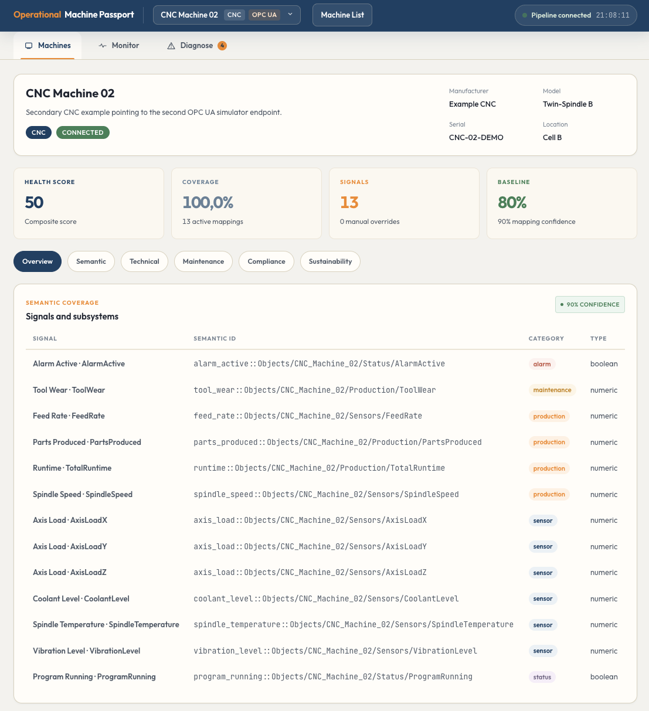
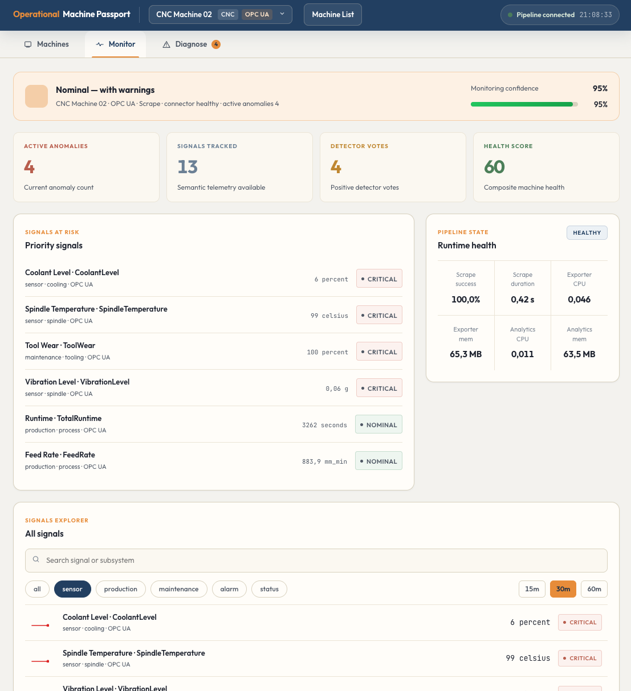
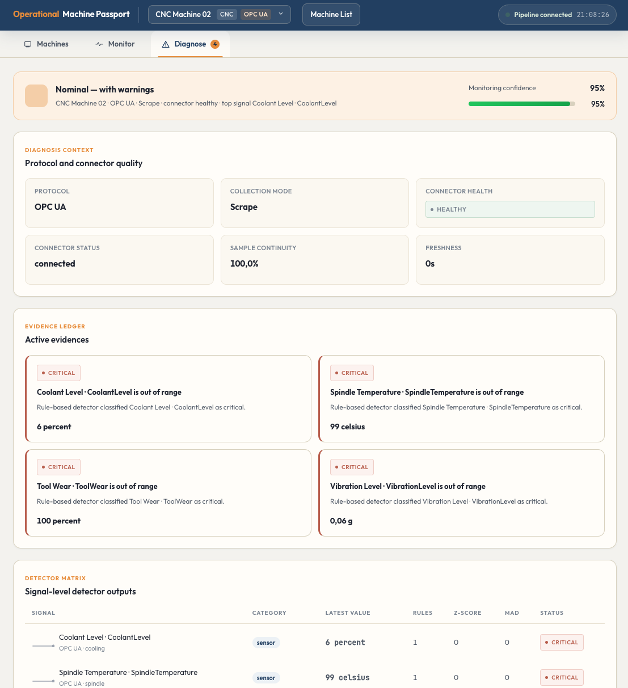

Machine Registry
Register multiple assets, keep persistent profiles, and switch between machines from a single operational workspace.
Industrial observability and machine lifecycle intelligence
A multi-protocol platform for registering industrial assets, discovering telemetry, building living machine passports, and diagnosing anomalies across OT and observability layers.
The platform combines machine onboarding, semantic telemetry discovery, multi-protocol observability, early anomaly detection, and a living passport that keeps the machine identity and operational context in one place.
Register multiple assets, keep persistent profiles, and switch between machines from a single operational workspace.
Connect assets over OPC UA and MQTT while normalizing signals into a common semantic model used by monitoring and diagnosis.
Generate a living passport with identity, connectivity, software, maintenance, compliance, sustainability and ownership context.
Detect anomalies using rule-based thresholds, rolling z-score and MAD, then correlate them with connector and pipeline health.
Operational Machine Passport is not just a dashboard. It acts as a machine registry, an observability layer, a semantic telemetry translator and a lifecycle-aware documentation workspace for industrial assets.
The interface is organized around machine-centered workflows: registry and passport management, live monitoring, and explainable diagnosis.

Persistent machine record with health, coverage, baseline and structured passport subsections.

Operator-facing telemetry view with anomaly count, pipeline health and signal explorer interactions.

Explainable anomaly diagnosis with connector quality, active evidences and detector matrix outputs.
The repository includes the monitoring stack, UI, analytics, industrial exporter, and demo OPC UA and MQTT simulators.
git clone https://github.com/CIGIP-UPV/Operational-Machine-Passport.git
cd Operational-Machine-Passport
docker compose up -d --build
# Main entry points
# UI http://localhost:4000
# Grafana http://localhost:3000
# Prometheus http://localhost:9093ghcr.io/cigip-upv/operational-machine-passport-analyticsghcr.io/cigip-upv/operational-machine-passport-industrial-exporterghcr.io/cigip-upv/operational-machine-passport-uighcr.io/cigip-upv/operational-machine-passport-opcua-simulatorghcr.io/cigip-upv/operational-machine-passport-mqtt-simulator